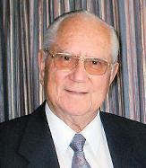
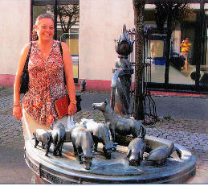

|
Indeks: |
Petronella Adriana (Riana) Henning (gebore Coertse) vrou van b7.c2.d4.e4.f6.g1.h1. Abraham Johannes Henning is op 9 Oktober 2008 deur rowers agter haar kar se stuurwiel in die voorkop geskiet nadat sy met haar dogtertjies wou vlug en in 'n boom vasgery het. Mev Riana Henning (31) is by die ingang van die Fisherman's Village-Christelike sentrum in Honeydew aan die Wes Rand doodgeskiet.
Riana en haar man, Abri (35), het hulle sowat ses weke vroeër as hoofbestuurders by die Christelike bediening van pastoor Linda Patterson (59) aangesluit. Patterson het hierdie sentrum, wat ook as ontvlugtingsoord dien, sowat vier jaar gelede op 'n hoewe naby Johanweg gestig. Patterson sê 'n groep vroue wat 'n bidsessie by die sentrum bygewoon het, het omstreeks 22:00 uur vertrek. Me Heather Costaras (35), Patterson se oudste dogter, sê sy vermoed die gewapende mans het in die riete langs die veld weggekruip en die perseel binnegesluip toe die hek oopgemaak is sodat die vroue kon uitgaan.
Patterson wou die biduur-vertrek gaan sluit toe haar worshond naby 'n bos gegrom het. 'n Man het uit die bos gespring, haar mond en neus toegedruk en haar beveel om stil te bly, terwyl hy haar in die huis ingedwing het. Nog rowers het toe reeds Patterson se jongste dogter, Suzanne (33), voor haar rekenaar op die boonste vlak van die huis oorval.
Die twee vroue se hande is met skoenveters agter hulle rug vasgebind en hulle koppe is met handdoeke toegegooi terwyl die rowers die huis vir buit deurgesoek het.
Die Henning egpaar en hulle twee dogtertjies, Marcelle (2) en Anika (10 maande), was ondertussen op pad terug na die sentrum, waar hulle ook woon, van 'n ander bidsessie buite die perseel. By die hek het hulle Patterson gebel om die hek oop te maak Een van die rowers het die hele tyd 'n pistool teen Suzanne se kop gedruk, terwyl sy Riana probeer waarsku het deur te sê: "Ons kan nie nou die hek vir julle oopmaak nie. Gaan asseblief weg en kom more weer terug", het Patterson vertel.
Die Henning egpaar en hulle twee dogtertjies, Marcelle (2) en Anika (10 maande), was ondertussen op pad terug na die sentrum, waar hulle ook woon, van 'n ander bidsessie buite die perseel. By die hek het hulle Patterson gebel om die hek oop te maak Een van die rowers het die hele tyd 'n pistool teen Suzanne se kop gedruk, terwyl sy Riana probeer waarsku het deur te sê: "Ons kan nie nou die hek vir julle oopmaak nie. Gaan asseblief weg en kom more weer terug", het Patterson vertel.
Abri het toe glo uit die motor geklim en deur die riete na die hut van 'n Malawiese priester, net bekend as Ernest, gestap om te vra dat hy die hek oopmaak, toe hy hom in die rowers vasloop waar hulle die buit in Patterson se kar gelaai het. Hy is ook aangehou. Riana Henning het in die gesin se BMW teruggespring en wou met haar twee dogtertjies wegjaag toe sy agteruit in 'n boom vasjaag.
"Een van die rowers het bloot na haar gestap en haar in die voorkop tussen die oë geskiet", het Patterson gesê.
Patterson het die noodknoppie in die gang met haar ken gedruk voordat die vroue hulself in die badkamer toegesluit het.
Hulle kon skreeuende bande, die botsing en die doodskoot buite hoor. Die rowers het egter te voet gevlug met net twee selfone, 'n skootrekenaar en salarisgeld vir die werkers.
Mnr Abri Henning het met sy vrou en kinders na die Wilgeheuwel hospitaal gejaag. Sy was by haar aankoms by die hospitaal dood. Abri het die veiligheidsdiens ADT ontbied wat Patterson en haar dogters gaan help het.
Niemand is nog in hegtenis geneem nie.

Dit is met leedwese dat ons verneem het van die afsterwe van die volgende Hennings:

b9.c1.d2.e9.f4. Jacob (Japie) Henning *26-3-1925 is op Donderdag 9 Oktober 2008 in die ouderdom van 83 jaar en ses maande in die Bayview Hospitaal, Mosselbaai oorlede. Hy het drie weke vroeër 'n hartomleiding gehad, maar het ongelukkig nierversaking gekry en is rustig oorlede.
Japie en sy vrou Lydia het in 'n aftree-oord op Uniondale gewoon ten tye van sy dood. Hy het gedurende 1949 by die Universiteit van Pretoria as geneesheer gekwalifiseer en daarna op verskeie plekke gepraktiseer. Gedurende Julie 1991 verkoop Japie sy prakyk in Bloemfontein en hulle tree teoreties af te George, want hy het voortgegaan om nog tot ouderdom 80 te praktiseer het. Daarna het hy steeds sy mediese lidmaatskap behou. Ongeveer 'n jaar gelede het hulle na Uniondale verhuis en dit was die eerste keer wat hy werklik afgetree het. Hy was egter nog baie aktief met korrespondensie met familie en vriende. Japie en sy vrou was erelede van die Familiebond.
b5.c1.d3.e1.f7.g2. Abraham Johannes (Ampie) Henning *1-5-1930 is op Saterdag 18 Oktober 2008 in die ouderdom van 78 jaar en vyf maande aan kanker oorlede. Hy het sy hele loopbaan in die SA Lugmag gedien en was met sy aftrede die Bevelvoerder van die Lug Logistieke Kommandement, met rang Brigadier.
Ampie, was die anker van sy gesin en later ook sy kleinkinders. Hy was 53 jaar met sy eggenote, Ina, wat sy volwaardige regterhand was, getroud. Hy het van kaalvoet plaaskind in die distrik van Memel opgegroei, tot gerespekteerde, eerbare en waardige Brigadier in die Suid-Afrikaanse Lugmag, tot sy aftrede.
Tydens 'n vakansie in die Nasionale Krugerwildtuin gedurende Meimaand 2008, het hy skielik siek geword en gevorderde kanker was gediagnoseer. Hy het vinnig agteruitgegaan en is op Saterdag, 18 Oktober, oorlede.
Hy was gekenmerk deur sy liefde vir die natuur, medemens en 'n waardige man van karakter. Ook sy liefde vir sport het uitgestaan, waar hy ook diep spore nagelaat het. Ampie en sy vrou Ina het in Wierdapark, Centurion gewoon.
Ons het ook verneem van die afsterwe van b7.c2.d15.e2.f5. Amelia Leona Perkins (gebore Henning) *16-11-1932 op 27 Julie 2008 te Springs in die ouderdom van 75 jaar en sewe maande. Sy was getroud met Frederick William Perkins, maar hy is reeds 33 jaar terug op 9 Junie 1975 in die ouderdom van 47 jaar oorlede. Amelia se dogter, Millie Lombaard het vir ons 'n pragtige, lang lekkerlees brief met haar ma se geskiedenis geskryf. Hierdie verhaal word in die Familiekroniek bygewerk.
Laastens het ons verneem van die afsterwe van b1.c6.d11.e10.f2. Lourens Jacobus Henning *14-9-1942 op 11 Desember 2008. Hy was reg deur die land onder alle Afrikaanssprekendes bekend as die bekende spotprenttekenaar, Lou Henning van die Sondagkoerant Rapport. Lou het uiteidelik sy jarelange stryd teen kanker verloor.
Hy het meer as 30 jaar sy tekenpen gebruik om lesers te vermaak - en te laat dink - in Die Transvaler, Die Vaderland en in Rapport totdat hy verlede jaar afgetree het. Met sy weeklikse spotprent en sy Hal-Lou-Daar-reeks van vroeër is Lou gereken as een van die meesters op sy vakgebied.
"Hy was vreeslik lief vir mense en 'n gentleman. Hy het ook altyd probeer om die humor in die lewe te sien, al was die ou wêreld soms só gebroke en dit vir hom 'n stryd om die humor vas te lê", het sy vrou Gloria gesê.
In die begindae van die Henning Familiebond, kon ons nog nie foto's in die Nuusbrief plaas nie. Lou het gereeld vir ons sketse vir die Nuusbrief gemaak en so meegehelp om die Nuusbrief op die regte pad te sit.
Met Lou se afsterwe groet ons een van die laaste Afrikaanse spotprent-kunstenaars van die 'ou bedeling', voor die koms van rekenaars. Hy was gewis een van die bekendste en geliefdste Hennings in die land en 'n persoon wat ons familienaam groot eer aangedoen het.

Mense wat gedurende die 1980's en 1990's Familiebond jaarvergaderings en familiefeeste bygewoon het, sal vir b7.c2.d4.e6.f1.g3. Johannes Benjamin Henning onthou. Hy was die man wat altyd op sy motorfiets daar aangekom het, omdat hy so groot was dat hy nie in 'n motorkar kon inpas nie. Ons moet darem bysê dat hierdie saggeaarde man een van die heel groot motorfietse nodig gehad het.
Johannes is ongelukkig reeds gedurende 2002 oorlede. Mauritz Henning van Theresapark, Pretoria-Noord het vir ons 'n interessante koerant foto van 'n klompie jare gelede van Johannes gestuur.
Die byskrif by hierdie koerantfoto was: "Mnr Johannes Henning (regs) van Pretoria het rede gehad om breed te glimlag toe hy 'n winkel in Pretoria ontdek het wat vir buitengewone mates voorsiening maak. Links is die personeel van die klerewinkel, mnre Harry Louw(52), Vincente la Ruffa(51), die eienaar en Stanley Anderson(59) - almal in 'n Henning broek."

Sedert Olivier Henning in 1980 met sy navorsing na die Henning families van Suid-Afrika begin het, is ons bewus van vier Henning families wat 'n besoek aan Lippstadt, die geboortedorp van Peter Henrich (Pieter Hendrik) Henning, ons stamvader, afgelê het.
Ons kon vasstel dat ons ou stamvader groot geword het in 'n huis op die hoek van Woldemei- en Klusetorstrate. Tot en met die laat 1970's het die oorspronklike huise, wat almal meer as 300 jaar oud was, nog hier in die Woldemeistraat gestaan. Ongelukkig het almal so vervalle geraak dat hulle in die middel 1970's afgebreek en met moderne besigheidsentrums vervang is. Ongelukkig het Olivier eers 'n paar jaar later met sy navorsing begin en is hierdie deel van ons geskiedenis vir altyd verlore.
Slegs een blok verder, op die hoek van Woldemei- en Luchtenstr is 'n pragtige drinkwater-fonteintjie waar mens heerlike koel water saam met verskeie brons plaasdiere kan drink.
Sonder dat hulle van die ander se foto's bewus was, het al vier gesinne een of meer foto's by hierdie fonteintjie geneem.
Die laaste van die vier gesinne was Stanley Henning en sy vrou Mary-Ann van Wierdapark, Centurion. Stanley, wat 'n plaasseun was, het al die diere van naby bekyk en tot die gevolgtrekking gekom dat die kunstenaar (wie hy ookal was) 'n goeie sin vir humor gehad het. Die gesigsuitdrukking van die perd is tipies die van 'n hings wanneer hy 'n merrie gewaar wat op hitte is. Ons wonder hoeveel mense (selfs ou Lippstadters) weet hiervan. Ons stadsjapies sou dit nooit kon geraai het nie.
|  |

Twee Henning jong mense het teen die einde van 2008 grade aan die Universiteit van Pretoria verwerf:
b5.c2.d13.e1.f3.g1.h2.i1.Lenise Henning *1-7-1985 dogter van Ignatius Wilhelm Henning en sy vrou Catharina Magdalena (gebore Mans) het die graad B Ing (bedryfingenieurswese) verwerf;
b1.c6.d11.e3.f1.g2.h3. Andrew Henning *14-4-1982 seun van William Desmond Henning en sy vrou Linda Mary (gebore Pearse) het die graad BvSc (Veeartsenykunde) verwerf.
Orania is die eerste groeipunt van 'n toekomstige Afrikaner tuisland. Diegene wat al daar besoek afgelê het, sal kan getuig dat dit 'n klein, wellewende, vooruitstrewende gemeenskap, is. Ons lees in die November 2008 uitgawe van die Orania Beweging se pragtige tydskriffie "VOORGROND" 'n kostelike artikel wat b6.c1.d3.e4.f2.g2.h1. Prof Jozef Jooste Henning raak. Jozef was sedert die stigting van Orania in die vroeë negentiger jare van die vorige eeu intensief betrokke by die totstandkoming van die dorp. Ons haal die artikel in geheel aan:
Orania Geskiedenis
In die begin jare was onsekerheid en vreemdheid deel van die leefstyl op Orania. Mense uit alle hoeke van Suid-Afrika het Orania besoek en betrek. Mense met karaktertrekke wat jou bemoedig het en ander wat jou met radeloosheid vervul het, was werklik aan die orde van die dag! Optredes en gebeurtenisse was dikwels onverwags of onvoorspelbaar ...
Oom Hendrik se Donkies sing saam
Dis Sondag en ons gemeenskap kom saam in die kerkgebou vir 'n erediens. Glo dit: ons het in die beginjare saam kerk gehou: Doppers, Gaatjieponders, Hervormers, AP Kerk, Pinkstergesindes, en ... oom Hendrik se donkies! Gelukkig het die drie volstruise geen enkele geluid gemaak nie!
Gee die predikant die gesang op en die gemeente begin sing, dan begin oom Hendrik se donkies uit volle bors balk. Deur die singery word gelag. Nes die predikant die hoogtepunt in die preek beklemtoon, dan beaam oom Hendrik se donkies oorkant die straat dit met 'n luide gebalk. Die gemeente proes van die lag.
So kan dit nie aangaan nie! Die opdrag is: skuif oom Hendrik se donkies na 'n ander plek in die dorp.
Oom Hendrik verseg: hy vat net "orders" van prof Jozef Henning. Ek besoek oom Hendrik weer. Die twee donkies staan jou wrintiewaar op die stoep en bekyk my met hangore. Ek vra mooi: "Oom, ek sal jou 'n ander huis gee en weiplek vir die donkies en volstruise".
"Nee, ek vat g'n 'orders' van die direksie nie," seg hy.
Ek vra toe vir Piet Pohl, die tegniese bestuurder, om asseblief maar die donkies en volstruise te skuif. Wat 'n gedoente! Die twee donkies kry ons maklik in die kamp, maar die volstruise hardloop die hele dorp vol! Dit jaag en fluit en ons harloop ons asems uit! In die gejaag hardloop ek deur die karkas van 'n verrotte skaap en ek praat tale van hoop ...Oom Hendrik is bitter boos. Hy skakel sy Professor. Ek moet verslag doen: "Asseblief Professor, daar is regtig geen ander oplossing nie, Die donkies kan nie meer saam met ons kerk hou nie!"

Diegene wat lanklaas na ons Henning webwerf op Internet gekyk het, kan gerus weer 'n draai daar maak. Die foto-albums van die onderskeie takke van die familie het so groot geword dat meeste albums baie stadig begin aflaai het. Ons het al die foto's nou kleiner gemaak en die groot albums in twee of drie dele verdeel. Elke deel laai nou sommer baie vinniger af. Besoek gerus www.henning.org

Baie dankie aan al die lede wat bydraes oor die afgelope drie maande vir ons aangestuur het - veral diegene wat ruimskoots bygedra het en dié wat maandeliks per debietorder bydra - JH (Jan) Henning van Glenstantia, Pretoria en Henning Pieterse van Rietvalleipark, Pretoria. Soos gewoonlik verstrek ons graag die name van lede wat donasies van R200.00 of meer aangestuur het:
Mnr Jan Andries Henning van Leraatsfontein - R400.00
Mnr L D Henning van DrieRiviere, Vereeniging - R300.00
Mev S D Grobler van Randparkrif, Randburg - R200.00
Mnr A M Kruger van Barberton - R200.00
Dr P A Henning van Durbanville - R200.00
Op 21 November 2008 het iemand van Woodlands 'n bedrag van R100.00 in die Familiebond se bankrekening gedeponeer, sonder om enige verwysing te verstrek. Laat weet asseblief vir ons wie u is.
Ongelukkig is daar nog 46 lede wat geen bydrae vir 2009 gemaak het nie.

Saterdag 1 November 2008 was 'n heuglike dag vir b7.c8.d8.e3.f5.g1. Stephanus Rudolf (Rudolf) Henning *17-9-1972 en Eldine Skinner. Hulle is op hierdie dag getroud in die Gereformeerde Kerk, Belville-Oos. Die huwelikseremonie is deur Eldine se broer, Ds Ivan Skinner wat 'n NG- predikant in Stellenbosch is, waargeneem.

Aan die einde van 2008 het 41 Henning kinders landwyd matriek in een of ander vorm geslaag. Soos gebruiklik was die grootste gros in Gauteng - 23. Daar was 5 in die Vrystaat, 4 in Mpumalanga, 3 in Noord-Wes, twee elk in die Wes-Kaap en Natal, een elk in Limpopo en die Onafhanklike Eksamenraad. Geen Henning het die eksamen afgelê in die Oos-Kaap (die bakermat van alle Henning families) en die Noord-Kaap nie.
Die beste presteerders was b6.c1.d3.e5.f11.g6.h3.Aldré Henning *1-1-1990 [D/v Douw Gerbrand Henning en sy vrou Elizabeth Magrietha (gebore Ackerman)] wat die eksamen in die Vrystaat met ses onderskeidings geslaag het en b7.c8.d5.e2.f1.g3.h2. Bianca Henning [D/v Gerrit Francois Henning en sy vrou Mariaan (gebore Roodt)] wat die eksamen met vyf onderskeidings in Mpumalanga geslaag het.
Ongelukkig is dit nie moontlik om 'n kitslys te kry van ons "halwe" Henninkies nie - diegene wie se ma 'n Henning was. Ons kan slegs verslag doen oor diegene wat self vir ons laat weet het. b7.c8.d8.e5.f5. Runa van Straaten (gebore Henning) van Doringkloof, Centurion het laat weet dat hulle dogter, Estí *27-9-1990 matriek met drie onderskeidings geslaag het. Sy het twee van haar ander vier vakke met 79% en die laaste twee met 78% geslaag. Hulle het reeds aansoek gedoen om al vier te laat hermerk.